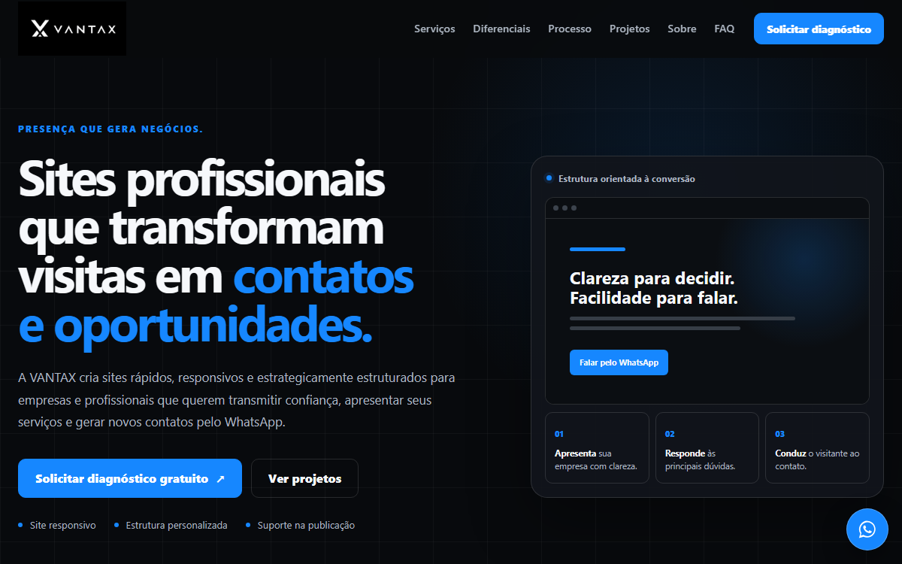
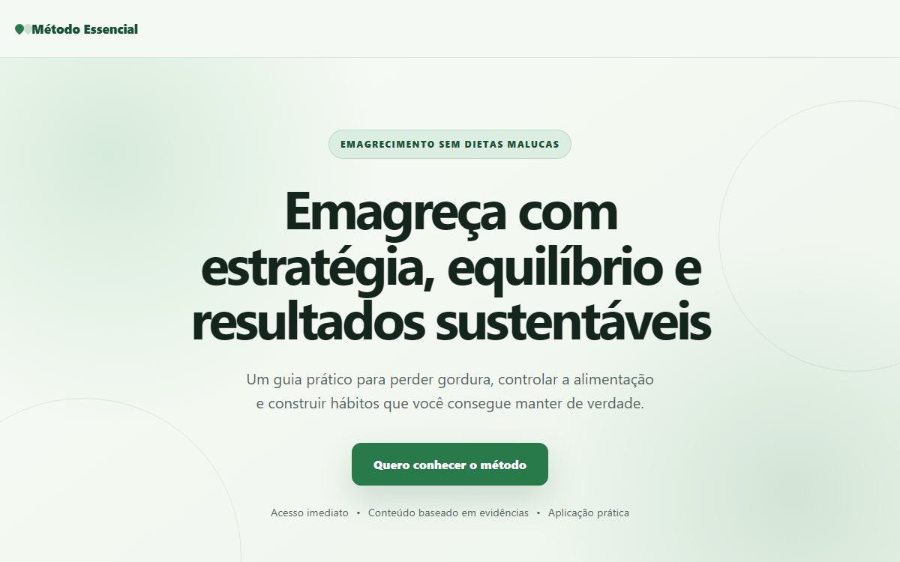

Dependência do Instagram
Informações importantes se perdem no feed e o negócio depende das regras de uma plataforma que não controla.
Presença que gera negócios.
A VANTAX cria sites rápidos, responsivos e estrategicamente estruturados para empresas e profissionais que querem transmitir confiança, apresentar seus serviços e gerar novos contatos pelo WhatsApp.
O custo de uma presença confusa
Quando um cliente pesquisa sua empresa e não encontra uma presença digital clara, profissional e confiável, ele pode simplesmente escolher um concorrente.
Informações importantes se perdem no feed e o negócio depende das regras de uma plataforma que não controla.
Serviços, localização, horários e diferenciais ficam difíceis de encontrar, aumentando o esforço de quem quer contratar.
Uma apresentação incompleta ou desatualizada pode não refletir a qualidade real do trabalho entregue.
Sem chamadas claras e integração com WhatsApp, o visitante pode desistir antes de iniciar uma conversa.
Textos pequenos, botões difíceis e carregamento confuso prejudicam justamente quem acessa pelo smartphone.
Sem um canal próprio e atualizado, fica mais difícil centralizar a oferta e apresentar os serviços profissionalmente.
Soluções com objetivo claro
Cada projeto parte do que sua empresa precisa comunicar, de quem deseja alcançar e da ação que o visitante deve realizar.
Presença digital completa
Uma presença profissional para apresentar empresa, serviços, diferenciais, localização e canais de contato.
Indicado para clínicas, consultórios, profissionais, prestadores e empresas locais.
Uma oferta, uma direção
Página estratégica para campanhas, divulgação de serviços, captação de leads, lançamentos ou uma oferta específica.
Indicada para quem precisa concentrar a atenção em uma ação.
Além do site convencional
Soluções sob medida para negócios que precisam de funcionalidades, integrações ou estruturas específicas.
Indicado quando o processo pede uma solução própria.
Por que a VANTAX
Você acompanha as decisões, sabe o que será entregue e recebe uma estrutura preparada para representar o seu negócio.
Solicitar análiseConteúdo e estrutura definidos a partir do público, dos serviços e do objetivo comercial — sem modelo genérico.
Hierarquia, argumentos e chamadas para ação conduzem o visitante até o WhatsApp ou formulário.
A experiência é revisada em celular, tablet e computador antes da publicação.
A proposta registra entregas, etapas de revisão e prazos para manter expectativas alinhadas.
O andamento é acompanhado sem intermediários, com decisões e próximos passos apresentados com clareza.
A VANTAX apoia a publicação e entrega ao cliente os arquivos e acessos relacionados ao projeto.
Método de trabalho
Cada etapa tem um propósito. Você sabe o que está acontecendo, o que precisa aprovar e qual é o próximo passo.
Entendimento do negócio, público, cenário e objetivo.
Definição de escopo, prazo, entregas e responsabilidades.
Organização das páginas, argumentos e chamadas para ação.
Criação da interface e implementação responsiva.
Ajustes previstos e validação conjunta do projeto.
Testes finais, configuração e entrada do site no ar.
Orientações sobre acessos, uso e próximos passos.
Projetos selecionados
Projetos próprios e conceitos identificados com transparência, mostrando decisões de estrutura, interface e desenvolvimento.

Presença digital criada para apresentar a marca, os serviços, o processo e os canais de contato com clareza.

Estrutura criada para apresentar benefícios, reduzir objeções e conduzir o visitante até a oferta.
Sobre a VANTAX
A VANTAX desenvolve soluções digitais para empresas, profissionais e negócios locais que precisam apresentar melhor seus serviços e facilitar o contato com novos clientes.
O trabalho reúne estratégia, conteúdo, design, desenvolvimento e apoio na publicação. Tudo é conduzido com comunicação direta, decisões explicadas e atenção ao contexto real de cada negócio.
Perguntas frequentes
Se sua dúvida não estiver aqui, fale diretamente com a VANTAX.
O investimento depende do escopo, da quantidade de páginas, das funcionalidades e do nível de personalização. Após o diagnóstico, a VANTAX apresenta uma proposta com preço, prazo e entregas definidos.
O prazo varia conforme o escopo e a disponibilidade dos conteúdos. A estimativa é definida na proposta antes do início, junto com as etapas e responsabilidades.
Sim. A interface é desenvolvida para funcionar em celulares, tablets e computadores e passa por testes antes da publicação.
A VANTAX pode orientar a escolha e cuidar da configuração. Os custos e condições de serviços de terceiros são apresentados separadamente e ficam vinculados ao cliente sempre que possível.
Sim. Os arquivos e acessos relacionados ao projeto são entregues e organizados ao final, conforme o escopo contratado.
Sim. A proposta define etapas e rodadas de revisão. Pedidos fora do escopo são avaliados e apresentados antes de qualquer custo ou prazo adicional.
Sim. Botões e formulários podem conduzir o visitante ao WhatsApp com mensagens organizadas e adequadas a cada objetivo.
Normalmente são necessários informações da empresa, serviços, identidade visual, canais de contato e materiais disponíveis. A lista exata é organizada após o diagnóstico.
Há suporte inicial para publicação e entrega dos acessos. Suporte contínuo ou novas evoluções podem ser incluídos na proposta conforme a necessidade.
Sim. O atendimento e o acompanhamento podem ser realizados remotamente pelo WhatsApp e por reuniões online.
As condições são informadas na proposta e combinadas antes do início do projeto, de acordo com o escopo e o cronograma.
Domínio, hospedagem e demais contas podem ser cadastrados em nome do cliente, que recebe seus respectivos acessos.
Diagnóstico gratuito
Preencha as informações essenciais. Ao enviar, sua mensagem será organizada e aberta no WhatsApp para você revisar antes de iniciar a conversa.
O próximo passo pode ser simples
Solicite um diagnóstico gratuito e descubra como um site profissional pode melhorar a apresentação, a confiança e a geração de contatos do seu negócio.
Falar com a VANTAX Sem compromisso. Atendimento direto pelo WhatsApp.